ARCC 2026 Hero Robot
A competition robot combining a suspension X-drive chassis with a turret armed with an accurate 42 mm gun. It played in all 3v3 games and scored several long-range heavy hits and kills, helping RoboRambler secure three victories.
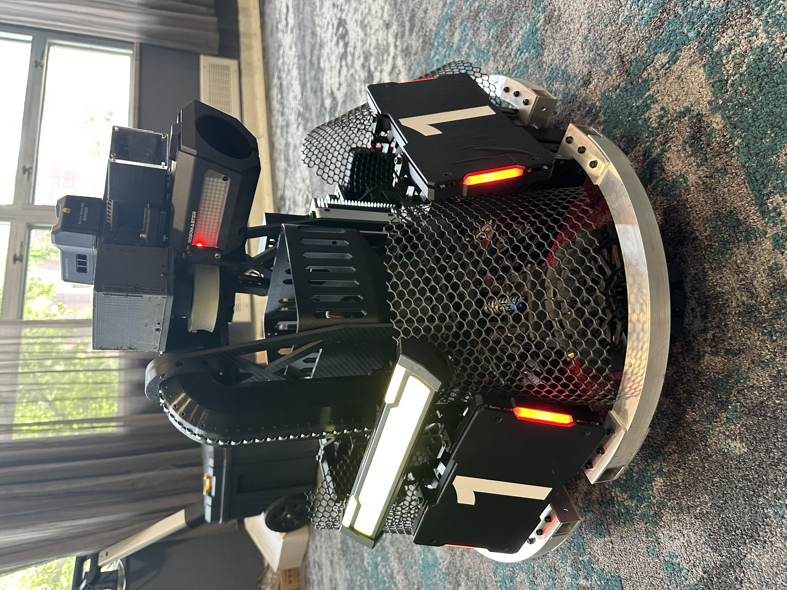
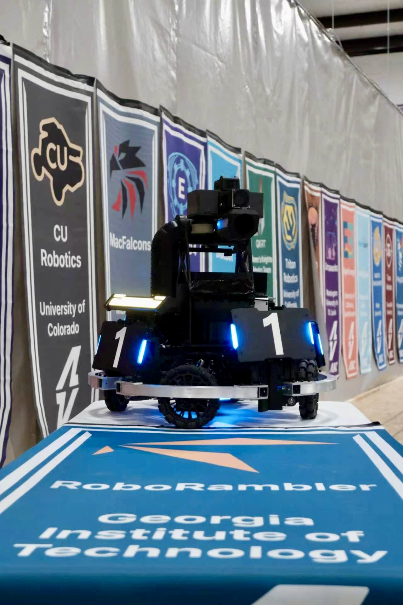
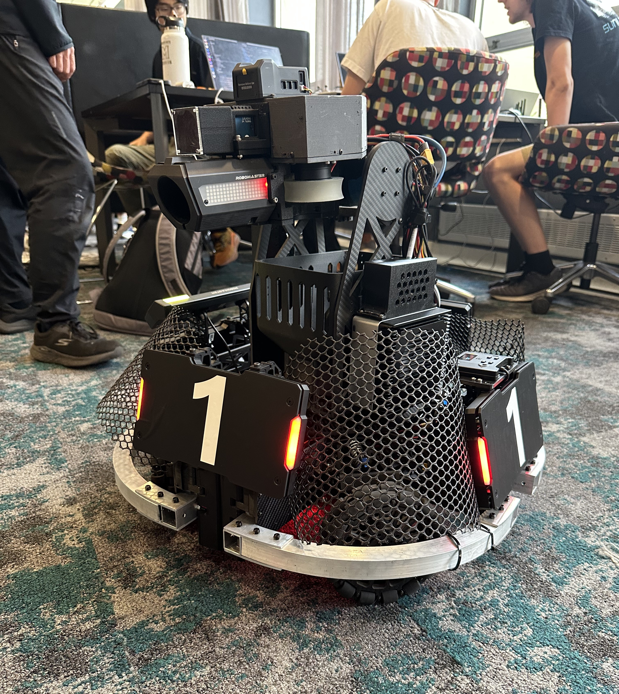
Project Overview
Competition rules limited the Hero robot to 300 Watt-hours of total power capacity, a maximum supply voltage of 30 V, a maximum weight of 35 kg, an 800 × 800 × 800 mm storage envelope, and a 1200 × 1200 × 1200 mm maximum transformation envelope. It was required to carry a single 42 mm launching mechanism for its primary offensive role. A supercapacitor system was also permitted, with the same 2000 J nominal and 2200 J measured energy limits used for other eligible ground-combat robots.
In addition to its own mechanical and electrical systems, the Hero had to accommodate approximately 4.2 kg of referee-system hardware, including four larger armor modules, a 42 mm projectile-speed monitor, video transmitter, field-interaction modules, and power and control electronics. These components imposed significant packaging, accessibility, and keep-out constraints that had to be incorporated into the mechanical design from the beginning.
The chassis frame was built from straight and bent 1 × 1 in aluminum extrusions joined through laser-cut aluminum brackets and superstructures. The suspension X-drive modules used 3–5 mm carbon-fiber plates connected by machined aluminum strips with mutually perpendicular M3 and M4 tapped holes. The launching mechanism used a pair of custom flywheels with heavier CNC-aluminum hubs and thicker, curved-profile polyurethane tires to increase rotational inertia while maintaining consistent projectile contact. Components with more complex geometry—including X-drive motor mounts, suspension-strut mounts, ammunition channels, the feed tube, and protective shields—were 3D printed in PLA, PA6-CF, or TPU depending on their mechanical requirements.
My Contribution
- Designed the custom curved-profile polyurethane flywheels for the 42 mm launching mechanism.
- Modified the projectile-stop mechanism used in the Infantry/Sentry turret architecture to accommodate the larger 42 mm projectiles.
- Developed a jam-resistant ammunition-loading system with bearings placed throughout the projectile path to minimize sliding friction.
- Designed a weight-balancing mechanism for the approximately 3 kg gun assembly, allowing it to hold nearly any pitch angle while consuming almost no motor power.
- Contributed to the suspension X-drive chassis through the same structural, packaging, manufacturing, and reliability work discussed on the ARCC 2026 Sentry Robot →
Interactive CAD Model
Explore the complete mechanical assembly and its major chassis, suspension, gimbal, and turret subsystems.
View ARCC 2026 Hero on Onshape →Chassis Development
This robot shared the suspension X-drive architecture developed for the ARCC 2026 Sentry Robot → The primary Hero-specific chassis change was a higher suspension-strut preload to support the substantially heavier turret while maintaining useful suspension travel and ground contact.
Turret Development
The 2025 Hero used the theoretically attractive bottom-feed ammunition architecture discussed alongside the team's other turret layouts on the ARCC 2026 Sentry Robot → For 2026, however, the team deliberately moved in the opposite direction and applied a mid-feed architecture to the Hero—an uncommon layout for this robot class.
The 42 mm projectiles require substantially more force to index than the 17 mm ammunition used by the Infantry and Sentry. The Hero therefore used a DJI M3508 motor for its projectile indexer rather than the smaller DJI M2006 commonly used on the 17 mm turrets. Packaging the larger motor, indexer hardware, and dozens of golf-ball projectiles away from the turret's yaw axis added a significant amount of rotational inertia.
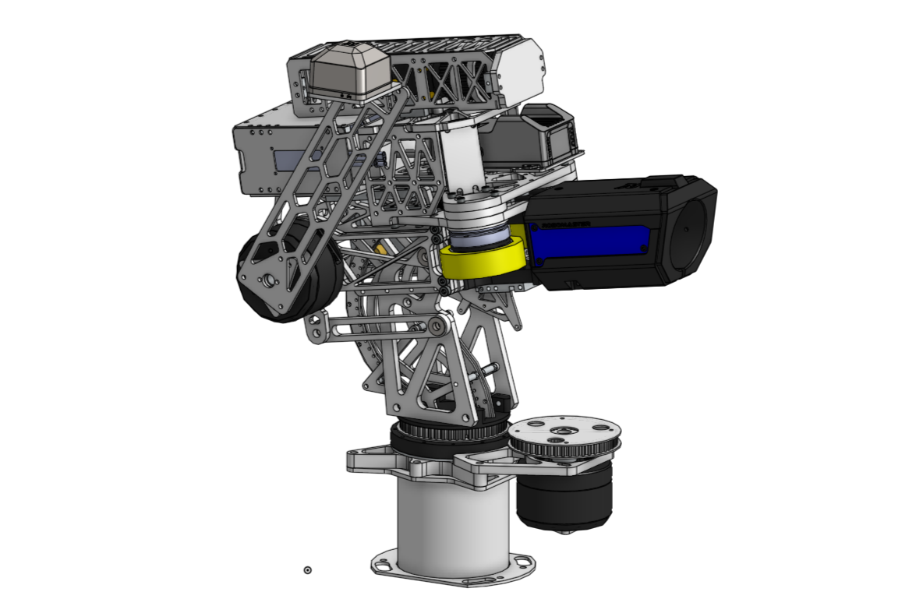
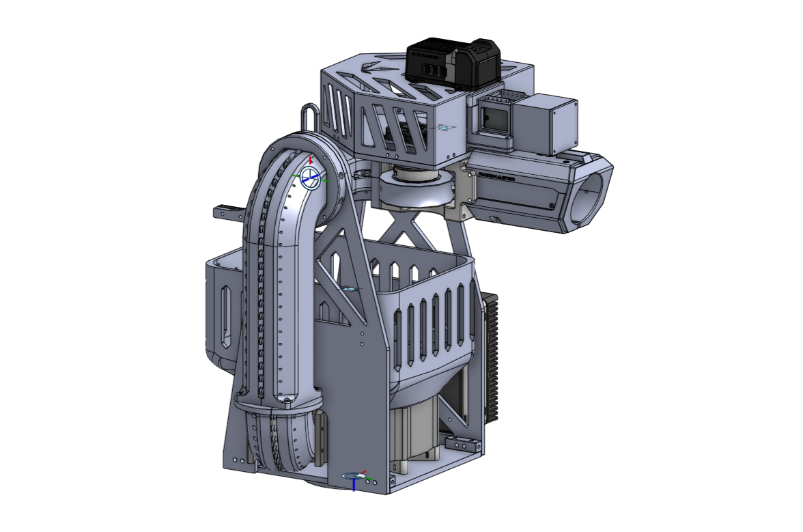
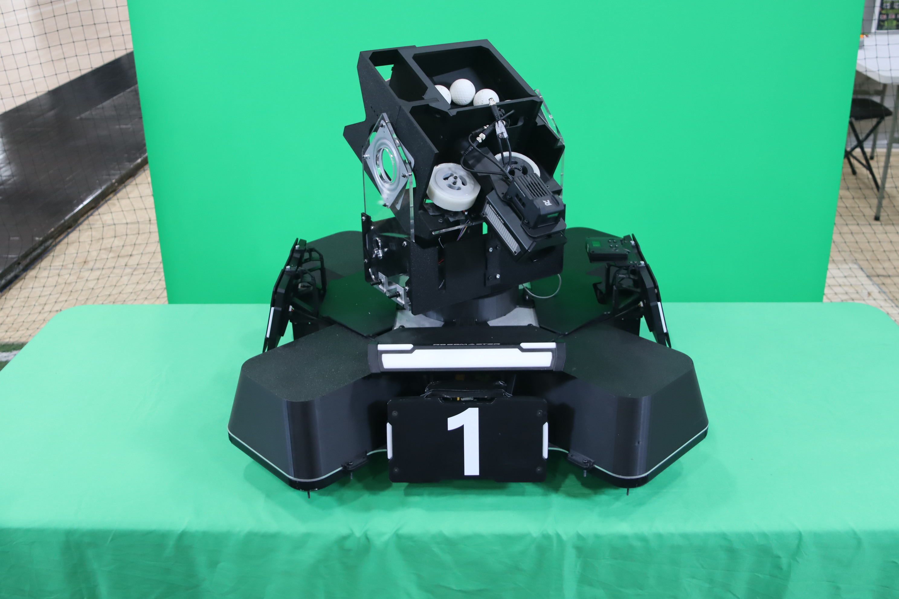
The team had several reasons for accepting this tradeoff, with logistics being the most important. At RMNA 2025, we had to disassemble robots for transport, pack them into suitcases, and rebuild them during the first two setup days. For 2026, we decided that every robot would travel fully assembled, either in my sedan or inside a 24 × 24 in robot case. Because the suspension X-drive chassis already approached this packaging limit, there was little room to redesign the lower chassis around a bottom-feed system, or our hero would have become a giraffe.
We also reviewed match statistics from RMNA 2025 and found that most Hero robots fired fewer than about 20 projectiles per match. At the same time, testing of the new curved-profile flywheels produced excellent accuracy: the gun hit an Infantry/Sentry armor plate 12 consecutive times from 5 m, near the upper end of typical engagement distance.
These results made the mid-feed tradeoff more reasonable. Placing the indexer and a smaller ammunition store near the center of the chassis still increased yaw inertia, but a Hero pilot could compensate by maintaining longer engagement distances. At those ranges, the turret generally required less abrupt tracking motion after auto-aim engaged, while the same stand-off distance also fit the Hero's role as a long-range heavy-damage robot.
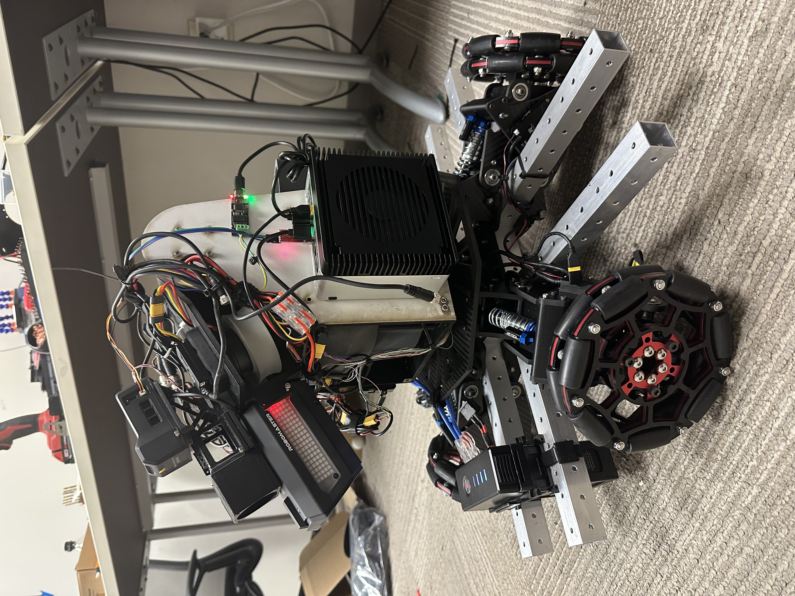
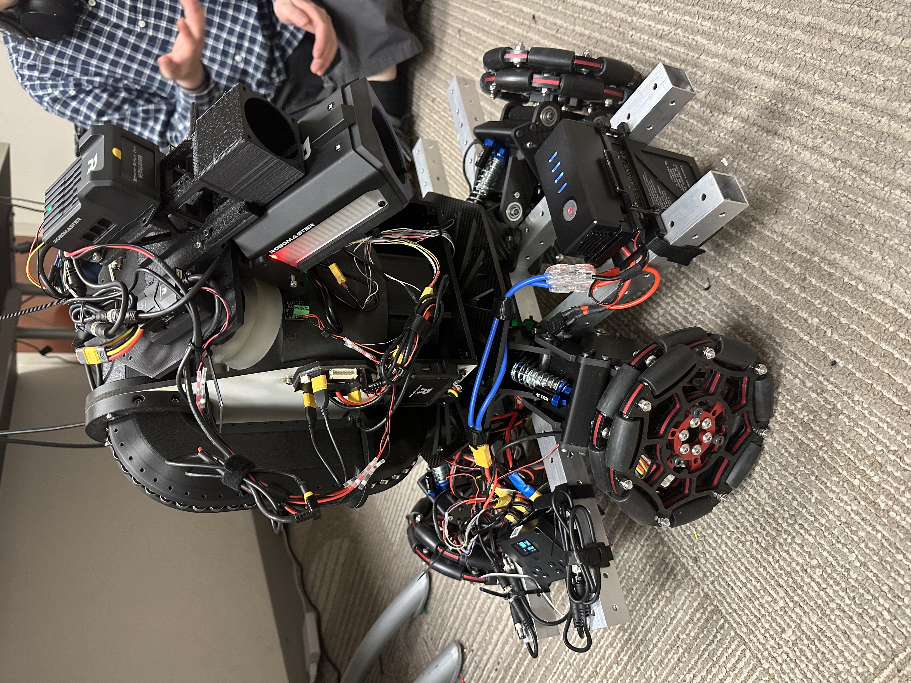
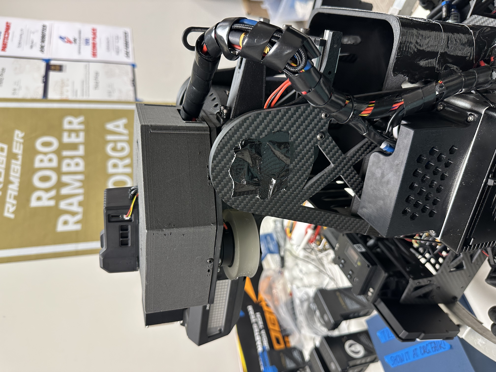
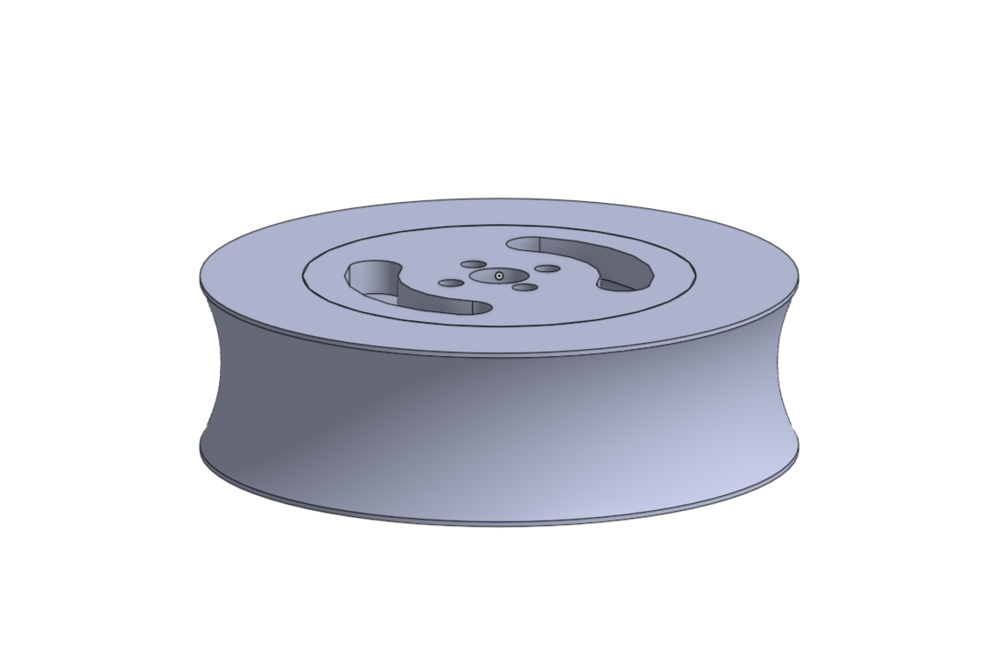
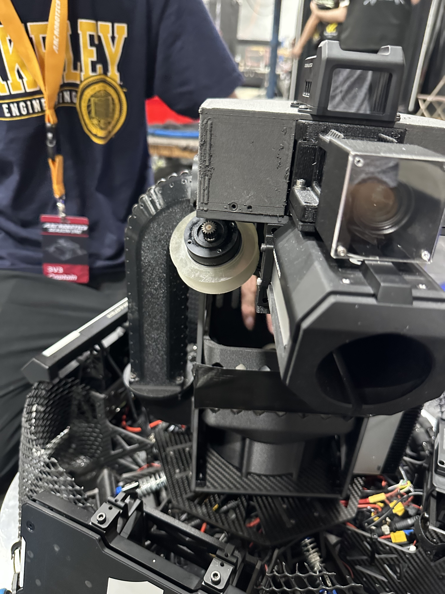
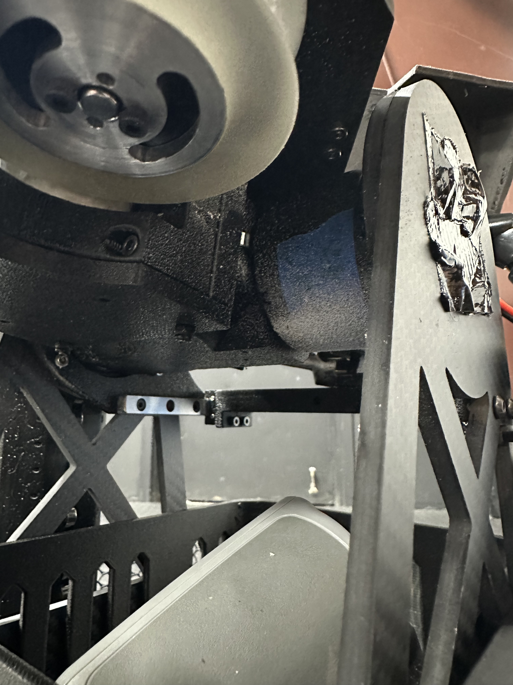
The 42 mm projectile is effectively a modified golf ball with a rubber-like outer surface, which creates substantial friction when pressed against stationary surfaces. I therefore designed the ammunition path so that the projectiles would roll rather than slide wherever practical.
I placed 2 × 6 × 2.5 mm bearings along the indexer bottom plate and 3 × 8 × 4 mm bearings at the tips of the heat-treated PA6-CF impeller branches. The same PA6-CF treatment approach is discussed in the ARCC 2026 Sentry Robot →
One particularly important location was the indexer outlet. As one projectile exits, the projectile directly above it cannot move in the same direction because it remains constrained by the impeller. Without a physical separator, friction between the two projectiles can jam the mechanism at the outlet. I added a row of 5 × 11 × 5 mm bearings above the opening to isolate the two balls and allow the outgoing projectile to roll beneath the next one.
The ammunition channel was much larger than the Infantry/Sentry equivalent and therefore more exposed to direct 42 mm impacts, so I printed it in TPU for toughness and impact resistance. The complete loading chain—indexer and channel—was cycled through 1000 rounds during development without a single jam.
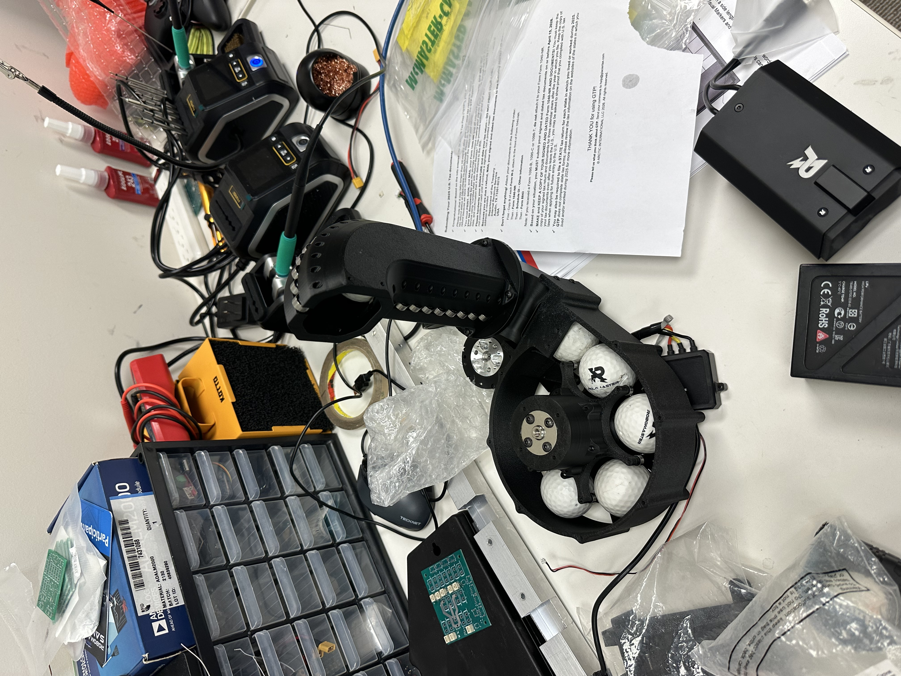
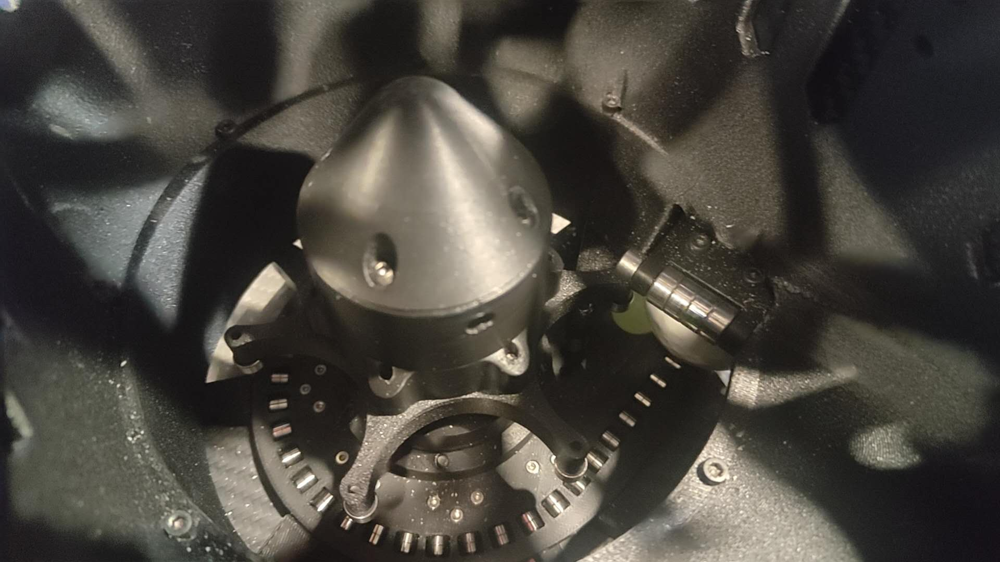
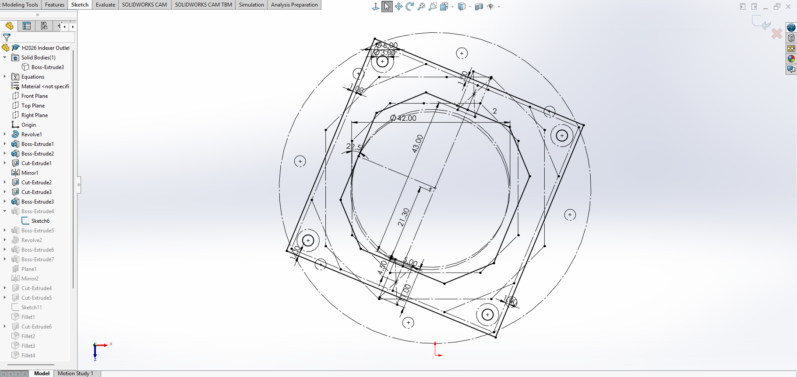
Auto-aim requires both yaw and pitch to respond quickly. With an approximately 3 kg pitching gun assembly, relying on the pitch motor alone to continuously fight gravity would have hurt both aiming performance and power consumption.
One team member first proposed an elegant gun-balancing mechanism based on constructing two similar triangles using three link lengths on the turret assembly and three forces: the gun's weight and the X- and Y-direction components of the force from a tension spring. Because the force triangle was geometrically similar to the linkage triangle, the gravitational moment of the gun could be matched by the spring-generated moment, reducing the problem to selecting a tension spring with the appropriate spring constant. However, this relationship was idealized under the assumption that the tension spring had zero initial length. A conventional tension spring has a nonzero free length, introducing a constant term into the spring-force equation that could not be canceled when solving for the spring constant, so the balancing moment would no longer remain exact throughout the full pitch range. Although we discussed mechanisms for approximating a zero-free-length spring, the required spring routing and anchor locations would have occupied too much space and been difficult to package around the mid-feed turret.
I approached the problem differently. Because the gun's weight is constant, a nearly constant vertical force applied behind the pitch axis can generate the opposing moment needed to balance it. I reused the linear guide rails removed from the ARCC 2026 Infantry Robot → swerve prototype to build a carriage for a set of constant-force springs. As the gun pitched, the carriage traveled along the rail so the spring force remained approximately vertical.
The remaining design variable was the effective moment arm, which I tuned experimentally. Before competition, the mechanism could hold the gun at virtually any pitch angle with almost no motor effort. After several days of intensive competition use, the balance was no longer perfect, but the mechanism still removed most of the gravitational load from the pitch motor.
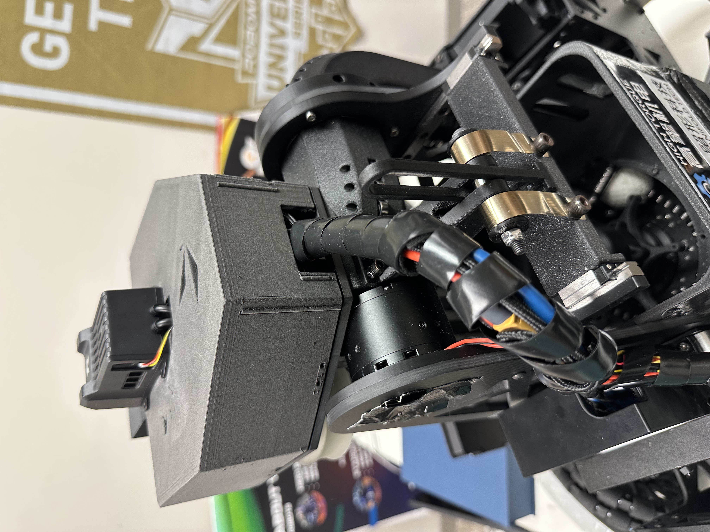
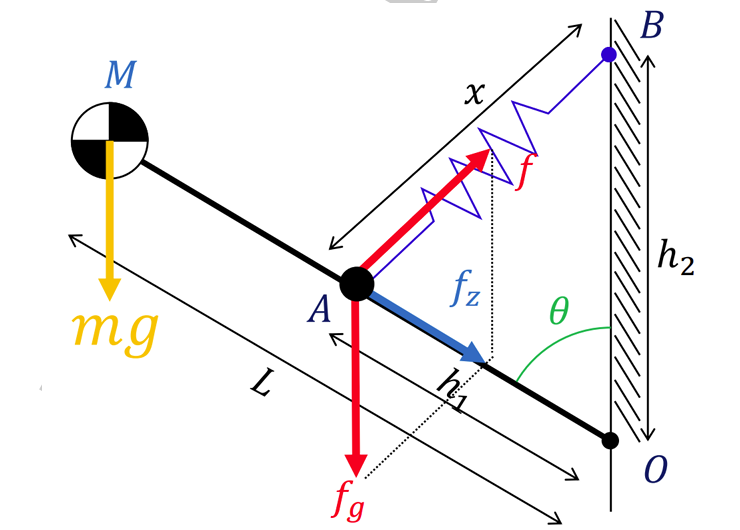
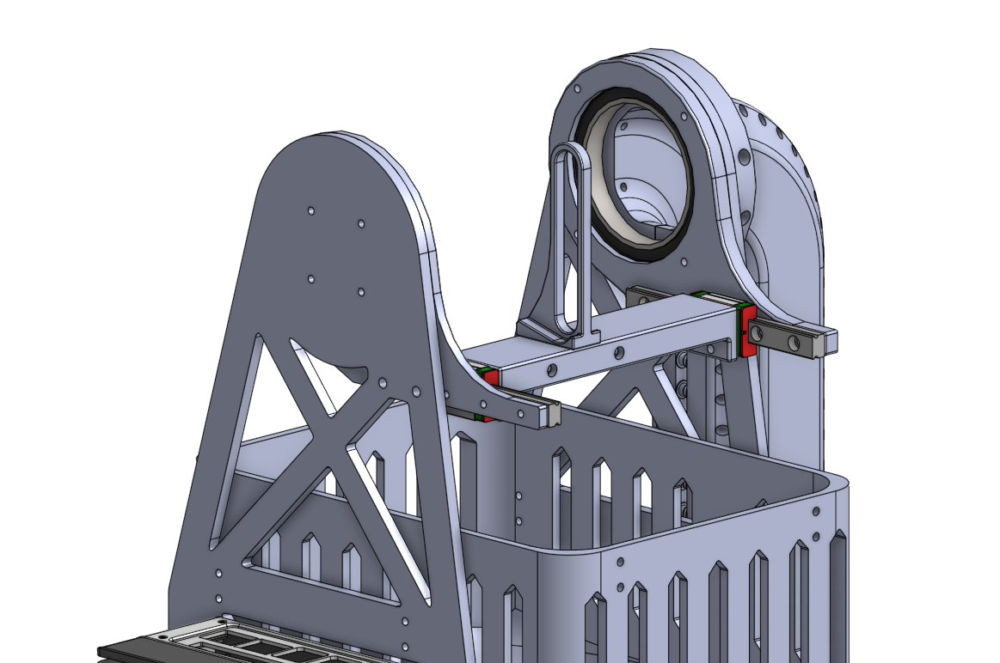
Development Video
Development footage showing the Hero's suspension, ammunition system, 42 mm gun testing, auto-aim, and weight-balancing mechanism.
Competition Video
Match footage showing long-range Hero engagements, auto-aim tracking, and the final robot operating in 3v3 competition.
Lessons Learned
As a retrofit of the same suspension X-drive and mid-feed design family used by the ARCC 2026 Sentry Robot → the Hero inherited many of the same packaging, responsiveness, and mass-distribution limitations, along with many of the same potential improvements.
The Hero amplified those tradeoffs because its 42 mm gun, larger indexer motor, larger ammunition, and heavier pitching assembly increased both yaw and pitch inertia. The weight-balancing mechanism substantially reduced the static pitch load, but future development would still benefit from moving more ammunition-system mass off the rotating turret where packaging and transportation constraints allow.